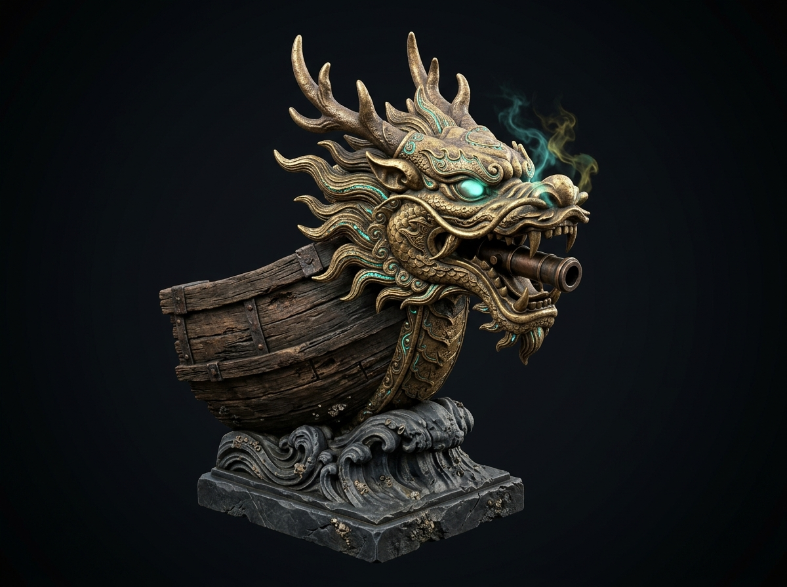

"유황 연막과 뇌성의 함수를 지배하는 신수"
"선수의 용 아가리에서 유황과 염초를 태운 푸른 독연(毒煙)이 뿜어져 나오니, 적선들은 안개에 갇혀 귀신 함대를 마주한 듯 전의를 상실했다."
임진왜란 해전의 판도를 바꾼 돌격선 거북선의 선체 역학, 화약 병기학, 고문헌 실증, 그리고 한산도·명량 해협의 유체역학적 전술을 통합 재구성한 다학제 모노그래프.
WebXR을 통해 한산도·명량 해협 3D 입체 전술도를 책상 위에 투영합니다.
[ Initializing 3D Geobukseon Diorama • Tide of the Iron Dragon Audio • Naval Tactical Ledger ]
철갑신룡의 파도 — 1592 한산도 해전 교향곡
스마트폰 카메라로 QR 코드를 스캔하여 거북선 3D 유물을 실제 공간에 증강현실(AR)로 소환하세요.
모바일 카메라로 QR 코드를 스캔하거나 카드를 선택해 3D 전술 캔버스에서 즉시 검수하세요.
360° 구면 해전 파노라마 렌더링 중...
모바일 기기로 스캔하여 한산도 해협의 수심 등고선과 학익진 전술 배치를 AR 테이블 위에 투영합니다.